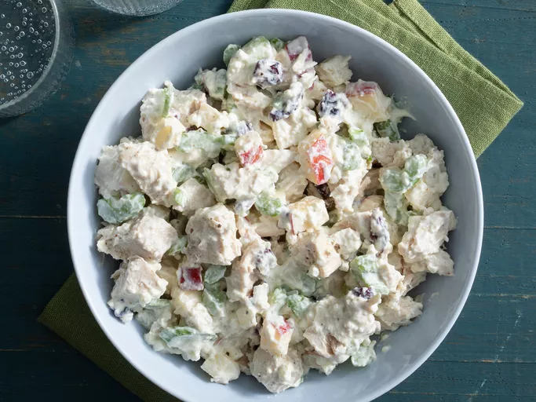

Chicken Salad
Home

Description
A healthy chicken salad with Greek yogurt and cottage cheese to give it that delicious probiotic kick!
This versatile recipe is the perfect excuse to add your favourite fruits.
Ingredients
- 1 (6 ounce) container fat-free Greek yogurt
- ½ cup low-fat cottage cheese
- ½ cup chopped celery
- ½ cup diced apple
- ¼ cup sweetened dried cranberries
- 2 tablespoons chopped onion
- 2 tablespoons chopped pecans
- ½ tablespoon Dijon mustard
- 1 ¼ cups cubed, cooked chicken
- salt and ground black pepper to taste
Steps
- Stir Greek yogurt, cottage cheese, celery, apple, cranberries, onion, pecans, and Dijon mustard in a bowl until well combined.
- Mix in chicken. Season with salt and pepper.
- Finished! Serve up and enjoy.